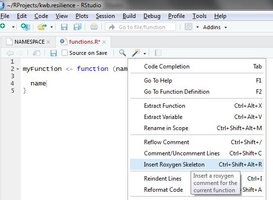
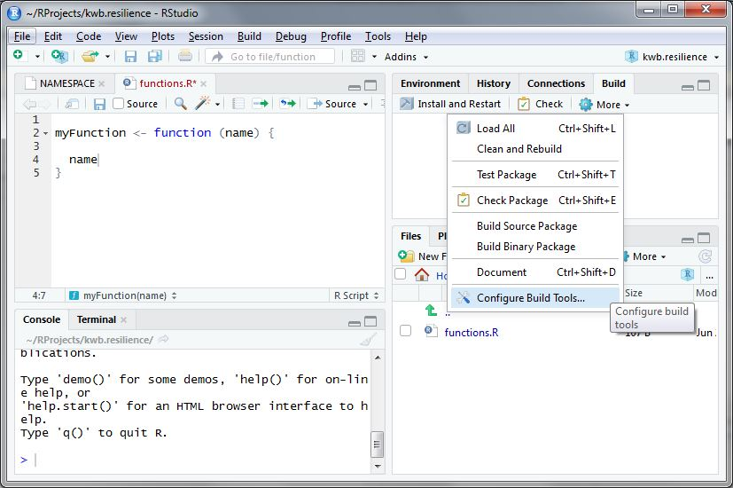
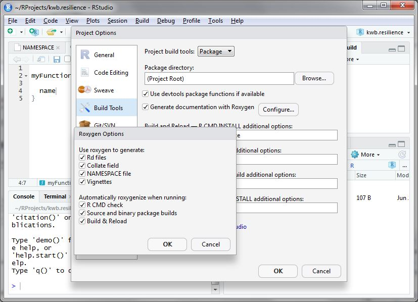
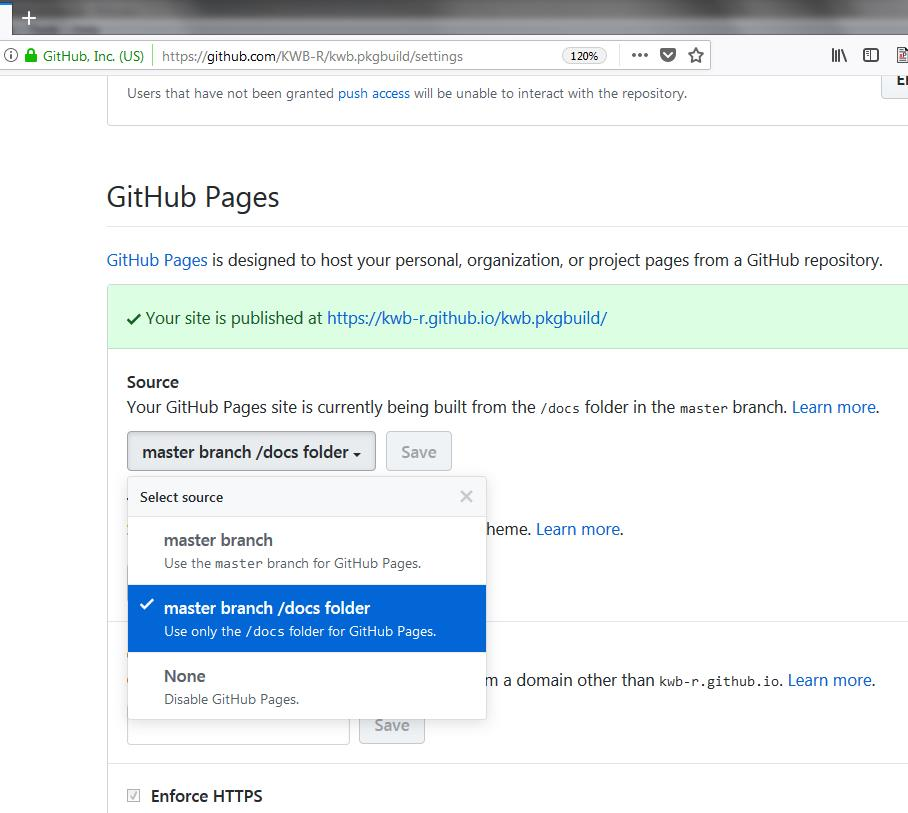

This tutorial explains how you can develop an R package within a few hours, that already follows a pre-defined default KWB package style (e.g. automatically adding KWB as copyright holder).
1 Install R packages
First you need to install the following required R packages:
installed_packages <- rownames(installed.packages())
### For installing an R package from Github
if(!"devtools" %in% installed_packages) {
install.packages("devtools", repos = "https://cloud.r-project.org")
}
### For building an R package according to default KWB styling
if(!"kwb.pkgbuild" %in% installed_packages) {
devtools::install_github("KWB-R/kwb.pkgbuild")
}
### Adding a documentation website for your R package
if(!"pkgdown" %in% installed_packages) {
install.packages("pkgdown", repos = "https://cloud.r-project.org")
}2 Personalise it
Secondly you need to personalise your R package, but using a default KWB package build template that is wrapped into the R package kwb.pkgbuild.
2.1 Create empty R package
temp_pkg <- file.path(tempdir(), "kwb.newpackage")
usethis::create_package(path = temp_pkg,open = FALSE)
#> Changing active project to kwb.newpackage
#> <U+2714> Creating 'R/'
#> <U+2714> Creating 'man/'
#> <U+2714> Writing 'DESCRIPTION'
#> <U+2714> Writing 'NAMESPACE'
fs::file_delete(path = file.path(temp_pkg, "DESCRIPTION"))2.2.2 Package description
The package description needs three entries
name: the name of the package
title: title of your R package in TitleCase (you can use the website https://titlecase.com/ for converting your non- title case conform title to a valid one)
desc: is the package description. Should be at least one sentence long and needs to end with a point!
2.3 Create R package structure in KWB-R style
Running the following code not only creates an R package structure but also adds some KWB-R specfic styling, e.g.:
-
Adding configution files for:
Continous integration on windows (https://appveyor.com) and linux (https://travis-ci.org/KWB-R)
Code coverage in R package using the servive codecov.io
Backup of Github repositories on our mirrored KWB-R group on Gitlab
Indicates the current lifecycle of the R package according to https://www.tidyverse.org/lifecycle/
Uses by default the permissive
 for all public R packages currently hosted on Github (see: http://kwb-r.github.io/status/) and lists KWB as copyright holder (see e.g. here)
for all public R packages currently hosted on Github (see: http://kwb-r.github.io/status/) and lists KWB as copyright holder (see e.g. here)Creates READMEs (.md, .Rmd) for the above mentioned topics and
Prepares a KWB-R flavored documentation website template named
_packagedown.ymlneeded by http://pkgdown.r-lib.org/
Running the following R function will create the R package with the version = 0.1.0.9000 and development stage experimental (defined here).
2.4 Add your R functions
Add your R functions in the folder R/. By using usethis::use_r with the parameter name = function an empty R script is already stored in the right folder R/.
For writing your R code/functions please follow the tidyverse coding style (https://style.tidyverse.org/), which serves as our default KWB-R style.
Now you just need to fill it with content (i.e. your functions) and document it using roxygen2. If you have already defined a function you can add a roxygen2 skeleton by using clicking on the Insert Roxygen Skeleton button in RStudio as shown below.

More information on documentation in R is provided here: http://r-pkgs.had.co.nz/man.html
3 Check it
Once you completed all the steps above go to the upper right panel in RStudio and click on Build -> More -> Configure build tools as shown below.

Then click on Configure and a new window opens. Here you select everything as shown below:

After doing so accept the settings by two times clicking Ok.
Subsequently click the Check button so that your package is cross-checked for possible problems (e.g. wrong documentation, missing package dependencies).
In case of missing package dependencies as shown below these should be added to the DESCRIPTION file.
Namespace dependencies not required: 'fs' 'httr' 'stringr' 'usethis' 'yaml'
See section 'The DESCRIPTION file' in the 'Writing R Extensions'
manual.
* DONE
Status: 1 ERROR
See
'C:/Users/myname/Documents/RProjects/kwb.pkgbuild.Rcheck/00check.log'
for details.
checking package dependencies ... ERROR
Namespace dependencies not required: 'fs' 'httr' 'stringr' 'usethis' 'yaml'This can be done using the function usethis::use_package() as shown below:
pkg_dependencies <- c('fs', 'httr', 'stringr', 'usethis', 'yaml')
sapply(pkg_dependencies, usethis::use_package)
✔ Adding 'fs' to Imports field in DESCRIPTION
● Refer to functions with `fs::fun()`
✔ Adding 'httr' to Imports field in DESCRIPTION
● Refer to functions with `httr::fun()`
✔ Adding 'stringr' to Imports field in DESCRIPTION
● Refer to functions with `stringr::fun()`
✔ Adding 'usethis' to Imports field in DESCRIPTION
● Refer to functions with `usethis::fun()`
✔ Adding 'yaml' to Imports field in DESCRIPTION
● Refer to functions with `yaml::fun()`Subsequently you should re-click on the Check button again and it should finish without ERRORS.
4 Build it
Now you are ready for building your R package by clicking on the Install and Restart button. A successful installation should finish with Done as shown below:
5 Document it
Finally you should run pkgdown::build_site() in order to create an documentation website for your R package. Running this command will store the website in the subfolder docs within your R package.
Once you upload your R package to Github this can be easily used as documentation page that you define in the settings page for your R package which is available at:
https://github.com/KWB-R/ kwb.mycoolrpackage /settings
